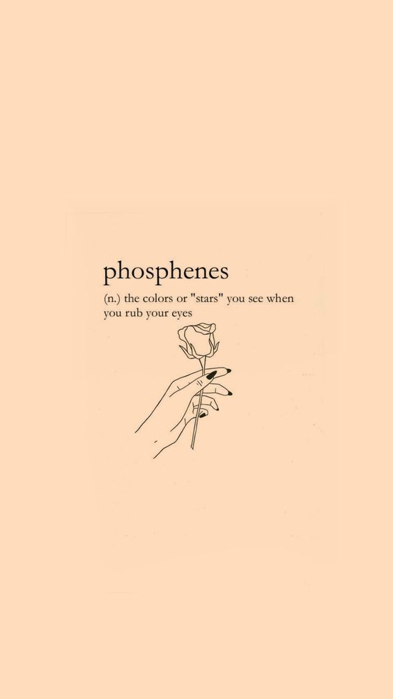

...

'Saat segalanya sesuatunya masih menjadi yang pertama kali.'
Banyak hal dalam hidup yang bisa kita pilih dan tentukan sendiri. Seperti pakaian apa yang kita kenakan hari ini,
jenis makanan apa yang akan dikonsumsi, siapa saja yang akan diterima kehadirannya, dan lain sebagainya. Tapi, tidak dengan kehadiran kita.
Kita tidak pernah diberi kemampuan memilih atau menentukan sendiri tentang kapan, di mana, dan bagaimana keadaan saat dilahirkan.
Kita hanya diminta tunduk pada kehendak Tuhan. Di hari, tempat, dan keadaan yang sesuai dengan ketentuan-Nya.
Saat lahir, yang kita tahu hanya binar tatapan orangtua. Yang sudah bertahun menanti kehadiran kita di tengah mereka.
Tidak peduili bentuk tubuh kita saat itu, yang jelas kehadiran kita begitu membawa bahagia di dalam dunia mereka.